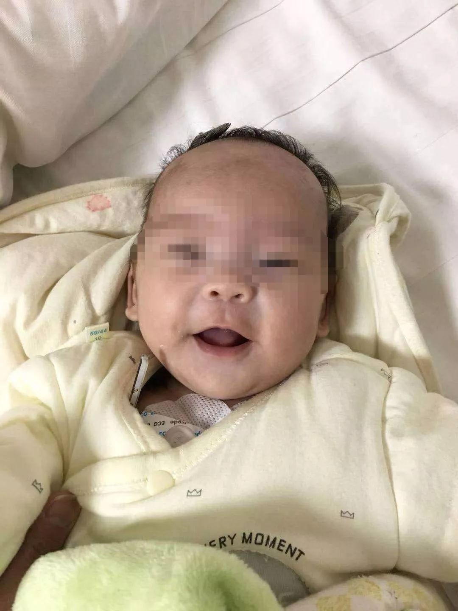
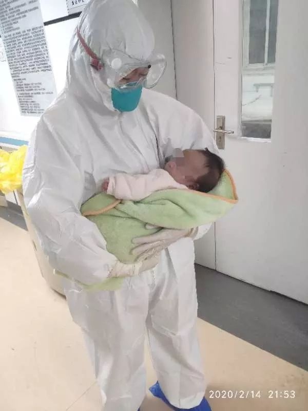

院长刘智明殉职：武昌医院院内感染严重，防护物资仍紧缺
原文链接 备份链接 “他是一个英雄” 2月18日上午10点54分，武昌医院院长刘智明因感染新冠肺炎，经抢救无效去世，享年51岁。 “刘院长是一个很负责的人，内心非常强，我们医院的同事都很敬重他。他长得高高大大的，很有才气，结果说没就 …

中青报·中青网记者白皓 见习记者白毅鹏
确诊为新冠肺炎后的第13天，乐乐（化名）出院了。这一天，是她出生后的第67天。
在这场新冠肺炎阻击战中，她是目前全国被治愈出院的最小患者。贵州省卫健委公开发布的信息显示，乐乐2月2日凌晨被贵州省人民医院儿科发热门诊收治，第二天，她被确诊为新冠肺炎。那时她还只有56天大。
“婴儿很脆弱，各种器官功能发育不完全，可能承受不了一些药物的副作用，治疗有难度。” 贵州省人民医院儿科主任崔玉霞说，儿科在业内被称为“哑科”，婴儿不会和医生交流，乐乐到底有什么异常，医生们只能通过细微的观察判断。婴儿的治疗方案必须考虑得更周全。

危险在入院后的第4天凌晨到来。乐乐突然哭个不停，动脉血氧分压降到了56毫米汞柱，心率超过200， 咳嗽增多，痰增多，病情开始向重症发展。
“氧分压降低，有呼吸衰竭的风险。”贵州省人民医院儿科主任崔玉霞判断，乐乐的病程进入了最危险的阶段。她按照提前准备好的救治预案下达了第一个指令——准备好呼吸机，防备病情继续恶化。紧接着，儿科的专家团队集结会诊。贵州省人民医院儿科的10位副高级以上职称的大夫紧急坐进了一个小讨论室。
进一步的检查结果显示，乐乐的双肺有片状渗出，磨玻璃样改变，肝功能异常，肌钙蛋白升高。肌钙蛋白是心肌坏死的标志物，这意味着心脏功能受到损伤，国内一些新冠肺炎的重症或危重症病例，也发现了肌钙蛋白升高的现象。双肺磨玻璃样改变是新冠肺炎的重要特征，进一步发展成“白肺”，人会活活被憋死。而此时，乐乐的表现只是哭闹，喝不下奶。

“你不知道我有多紧张，躺在办公室睡不着，但在大家面前我得表现出镇定。”崔玉霞对中青报·中青网记者说。
为了尽最大努力救治乐乐，贵州省人民医院儿科除了抽调了10名副高级以上职称的大夫组成联合专家组外，还有4位儿科医生管床，6名护士轮流在病房护理，每天早上8点半，10位资深大夫都会坐在一起讨论乐乐的病情。医院还紧急联系上中华医学会儿科学分会呼吸学组组长、首都医科大学附属北京儿童医院呼吸科主任徐保平教授远程会诊。
继续给氧、保持呼吸道通畅、用干扰素、上保护心肌的药物、雾化……紧张的讨论后，一系列救治意见被带出讨论室，进一步的治疗随即展开。
2月6日晚，儿科护士何小敏第一次在医院的隔离病房见到乐乐。那一夜，何小敏随时观察，一刻也不敢放松。血氧饱和度掉了，她立即上氧。穿着防护服带着两层手套，把输氧管插进鼻腔合适的位置不是件容易的事儿。
痰积在嗓子眼儿里，乐乐发出“呼呼”的声音。要立即吸痰。护目镜边缘勒进何小敏眼眶的肉里，眼前都是雾气，还要带上一块面屏，把吸痰管伸进孩子喉咙中，准确找到位置，吸出痰液。
每一步操作都比日常困难，有时，吸痰管会碰到乐乐娇嫩的喉咙，痰液喷射出来，护士感染的风险成倍增加。但是没有一个护士退缩过，从进病房之前一两个小时开始不吃不喝，5个小时一个班，脱下防护服精疲力尽。

何小敏说，进入“红区”前，她没告诉父母。男朋友把她送到医院门口，两人挥手告别，这个参加工作3年多的姑娘感觉上了个往常一样的班，却开始了“像电视上一样的战斗”。
在这场“战斗”里，乐乐和同样确诊的妈妈在一起。她的头发剃掉了，输液的针打在脚上，何小敏知道，这意味着针头在头上、手上都扎不进血管，选择扎脚之前应该没少受苦。
乐乐的妈妈情绪很低落，她自己也是感染者，但所有心思都在孩子身上，乐乐是她的二胎，只有在妈妈怀里能稍微安静一会儿。
妈妈整夜熬着，一直很内疚。春节前，乐乐刚满月，远在湖北省安陆市的姥姥姥爷想看看这个刚降临的小天使，一家人下了很大的决心，自驾1000多公里的路于1月16日回到位于安陆市黄荆山的老家。在老家期间，与武汉的亲戚有过接触，回到贵阳后，一家人全部确诊。
何小敏能看得出乐乐病情加重让妈妈很焦虑，她一直希望用自己的专业护理去安慰年轻的妈妈，奶粉纸尿裤随叫随到，配药喂药讲解清晰，有一回手背手腕两次扎针都“一针见血”，“这个护士阿姨技术真不错。”妈妈很难得地笑着说了一句话。
何小敏试着给乐乐多喂点奶，奶瓶里90毫升的配方奶只喝了几口，乐乐就咽不下去了。自身抵抗力是战胜新冠病毒的最有力武器，奶粉喝得少，身体就更虚弱。何小敏想抱抱乐乐，但乐乐明显不喜欢穿着防护服像外星人一样的阿姨，按照操作规范，治疗期间护士也不能把孩子抱在怀里。
1小时，8小时，24小时，48小时，72小时……随着药物进入体内，护理越来越细致，乐乐的病情被遏制住了。何小敏特别高兴的是，乐乐的喝奶量有一次悄悄从90毫升增加到了120毫升，乐乐全喝了进去。护士们把乐乐每一次的大便、小便情况都做了详细记录，包括小便的颜色、尿量和大便的形状气味，都在向好的方向发展，哭闹时间也在减少。

管床医生王亮很欣慰，乐乐2月2日凌晨被送到医院就诊时，他是接诊大夫，诊室外所有人“全副武装”，救护车警灯异常刺眼，诊室内乐乐却非常安静，躺在橘黄色的包被里熟睡，不像要与死神较量的样子。从发热门诊到隔离病房，王亮一直在乐乐的病床边，凌晨4点多安排进病房，连接上心电监护，吸上氧，王亮在病房外坐到天亮。
王亮说，自己很少这样忐忑，隔十来分钟看一次墙上的钟，脑子里一遍遍过着各种紧急状况的应对办法，“万一突然不好呢？我得救她。”
乐乐的情况一天比一天好，又经过5、6天的治疗，各项生理指标趋于正常，CT显示，肺部的炎症也开始吸收。
2月15日，经专家审核，乐乐和妈妈都达到出院标准，准备出院。那一天，数十家媒体的镜头在病房外对准妈妈怀里的乐乐，贵州省人民医院儿科副主任汪希珂接到了很多同事和朋友表示祝贺的留言，汪希珂给很多人回复说，湖北前线的同行一个人面对成百上千的病人，跟他们比自己微不足道，只是做了该做的。但在汪希珂心里，乐乐很重，“最脆弱的婴儿治愈了，全国打赢这场仗的信心又会增加一些。”
而对于乐乐的另一位管床医生陈云来说，印象很深的是自己有一天下午在医院宿舍里看微信，治疗信息交流群里突然发出了一张乐乐笑眯眯的照片，“乐乐笑了。”他感觉这是一个历史性的时刻。
中国青年报·中青在线出品
微信编辑 | 陈轶男

觉得好看请点这里
原文链接 备份链接 “他是一个英雄” 2月18日上午10点54分，武昌医院院长刘智明因感染新冠肺炎，经抢救无效去世，享年51岁。 “刘院长是一个很负责的人，内心非常强，我们医院的同事都很敬重他。他长得高高大大的，很有才气，结果说没就 …
原文链接 备份链接 澎湃新闻记者 赵思维 发自武汉 实习生 夏梦洁 从1月23日21时许发出第一条求助微博，25岁的新冠肺炎痊愈者武康发布了50余条微博，粉丝从1000涨至现在的179万粉丝。 这些微博记录了他从发病住不进院的无助、被病魔 …
原文链接 备份链接 看到“7例肺炎”的新闻后，小熊赶回了武汉。但妈妈还是病倒了。目前居家隔离的妈妈病情有所好转，可小熊还是一刻不敢放松。 文 | 吴美芬 1月1日，家住武汉的小熊在贵阳出差。这天他第一次听说了“新型肺炎”，新闻里说武汉有7 …
原文链接 备份链接 “我要承担自己的责任，好好照顾家人，把这个家像捏面粉一样捏起来。” 全文5358字，阅读约需10.5分钟 2月13日，余华离开医院、回到家中，多日未相见的女儿想念妈妈，张开双手要一个抱抱，余华硬下心肠拒绝了——这个拥 …
原文链接 备份链接 摘要：截至2月17日，全国已有3.2万余名医护人员支援湖北，支持湖北实现“应收尽收、应治尽治”。2月7日，其中一支医疗队的领队、复旦大学附属中山医院副院长朱畴文率领的136人队伍奉调入鄂，一天后接管了武汉大学人民医院东 …